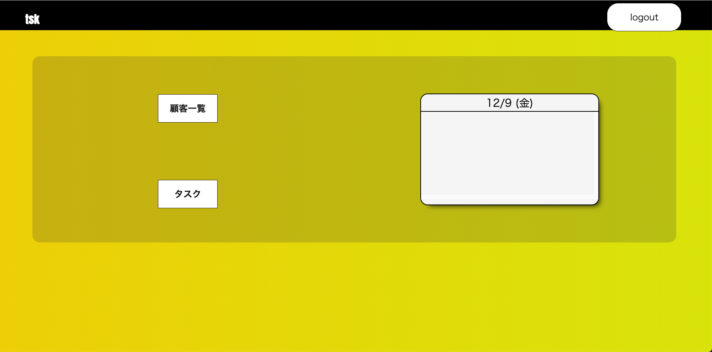
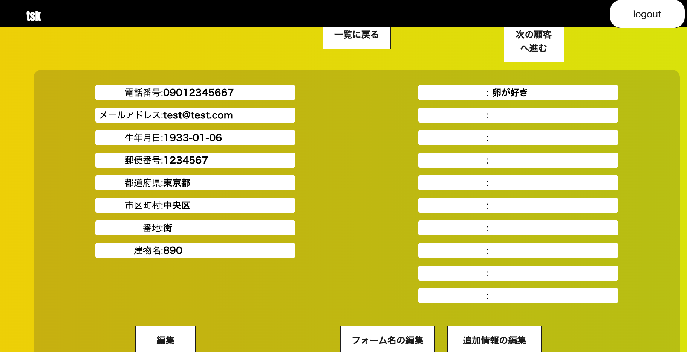

Tsk（タスク管理アプリ）


開発環境
Ruby / Ruby on Rails / MySQL / GitHub / Render / Visual Studio Code
-
概要
制作時間 80時間 URL https://tsk-38657.onrender.com テスト用アカウント
mail rtm29331@gmail.com PASS 123qwe OUTLINEアプリケーションの概要
オリジナルアプリケーションとして、予定管理アプリを開発しました。
主な機能は、ユーザー登録機能、シンプルカレンダー機能、予定登録機能です。トップページにアクセスすると、当日の予定が表示されています。タスクボタンからにページ移動をしてお客様または、移動場所を記入し登録することで予定を追加することができます。
-
開発に至った経緯
■前職で自分の行動スケジュールの管理を毎週Excelで作っていた事もあり、情報の管理をスムーズにできるようにと思い作成しました。
また必要に応じて自分でフォームを追加してカスタマイズできたり、スタッフとの行動スケジュールも共有できれば思いプラスαで追加実装しました。
■ターゲット ターゲットは顧客を扱う職業の社会人。その中でも、顧客ごとに必ず登録しておきたい情報があるが、現在利用している顧客管理アプリにはその情報の入力フォームが無いため、備考欄などに追記する形で対応している方。
-
開発で工夫したこと
１つ目は、シンプルなデザインにした事です。シンプルなデザインにすることで自身の予定が見やすく、管理しやすくなるからです。タスクページにはシンプルカレンダーと予定登録フォームの２つを実装し、とても分かりやすい見た目となっています。また、スマートフォン用にレスポンシブを整えているので、スマートフォンからも利用できます。
2つ目は、今日の予定一覧を表示する機能を実装した事です。ログインすると当日の予定が確認できるように表示されているので、自身のやらなければいけない事が明確になります。
いずれも、知人に実際に利用してもらいヒアリングを行いながら改善を行っています。
-
今後実装したいと思っていること
●追加フォームの新規登録, 編集機能
●追加フォームへの情報登録, 編集機能
自身の構想の他に、知人,友人,前職の同僚などにこのアプリを使ってもらい、そのフィードバックから得たアイデアも含まれています。
●顧客の検索機能。→ヘッダー部分に検索フォームを設置予定。名前だけでなく、携帯番号やメールアドレスでも検索ができるように実装。
●各顧客詳細ページにおいて、画像投稿機能。→画像とその画像のタイトルを保存できるだけでも、接客記録の幅が広がるため。
●登録済み顧客一覧の名前表示をクリックすると個人の予定や情報が出るように表示。
●タスクの横に完了ボタンを表示させ、クリックするとそのタスクを非表示にする仕様。→残りのタスクを明確にするため、ユーザーのモチベーションに繋げるため。
●AWSでデプロイの導入。